Impacto de la pandemia Covid19 en el E-Commerce en América Latina
Con la inevitable “nueva normalidad” llegan tiempos de nuevos desafíos y oportunidades; es por esto que desde PayU queremos compartir con nuestros clientes, aliados, empresarios y comunidad, una mirada holística del impacto que la pandemia por COVID-19 ha tenido en el comercio electrónico de América Latina.
En los primeros siete meses de 2020, PayU procesó más de 115 millones de transacciones en más de 25 mil comercios además de contar con alrededor de 47 millones de compradores, los cuales han encontrado en PayU seguridad y confianza a la hora de procesar sus diferentes pagos.

Estos últimos meses y debido al estado de emergencia, el entorno económico se enfrentó a grandes cambios en los hábitos de consumo, uno de ellos fue una fuerte migración al comercio electrónico, donde evidenciamos un panorama muy positivo, miles de usuarios, tanto compradores como comerciantes, han usado este canal y lo han asumido como una forma de continuidad de negocio cómoda, segura y confiable. En PayU queremos seguir aportando nuestra cuota a la reactivación económica y junto con nuestros comercios continuar en la construcción de una oferta de valor que ayude a la rápida recuperación de toda la región
Estos últimos meses y debido al estado de emergencia, el entorno económico se enfrentó a grandes cambios en los hábitos de consumo, uno de ellos fue una fuerte migración al comercio electrónico, donde evidenciamos un panorama muy positivo, miles de usuarios, tanto compradores como comerciantes, han usado este canal y lo han asumido como una forma de continuidad de negocio cómoda, segura y confiable. En PayU queremos seguir aportando nuestra cuota a la reactivación económica y junto con nuestros comercios continuar en la construcción de una oferta de valor que ayude a la rápida recuperación de toda la región
Francisco León
CCO PayU Latam
La evolucion de las ventas de nuestros comercios en los primeros 7 meses del 2020
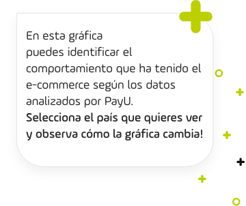
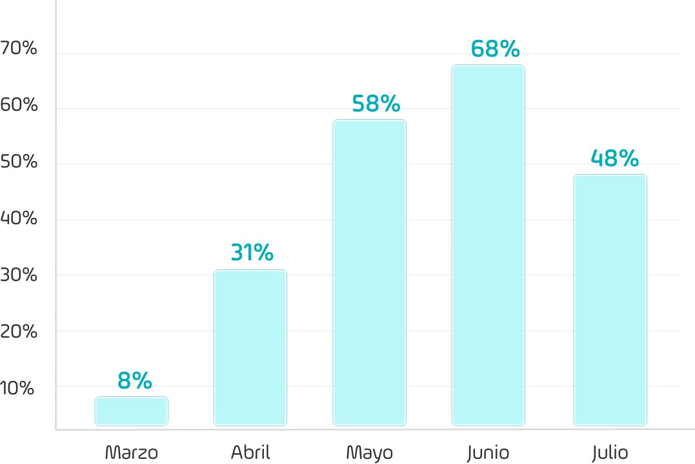
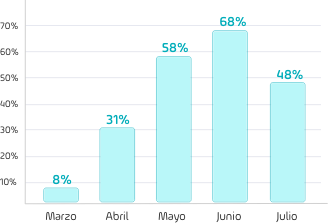
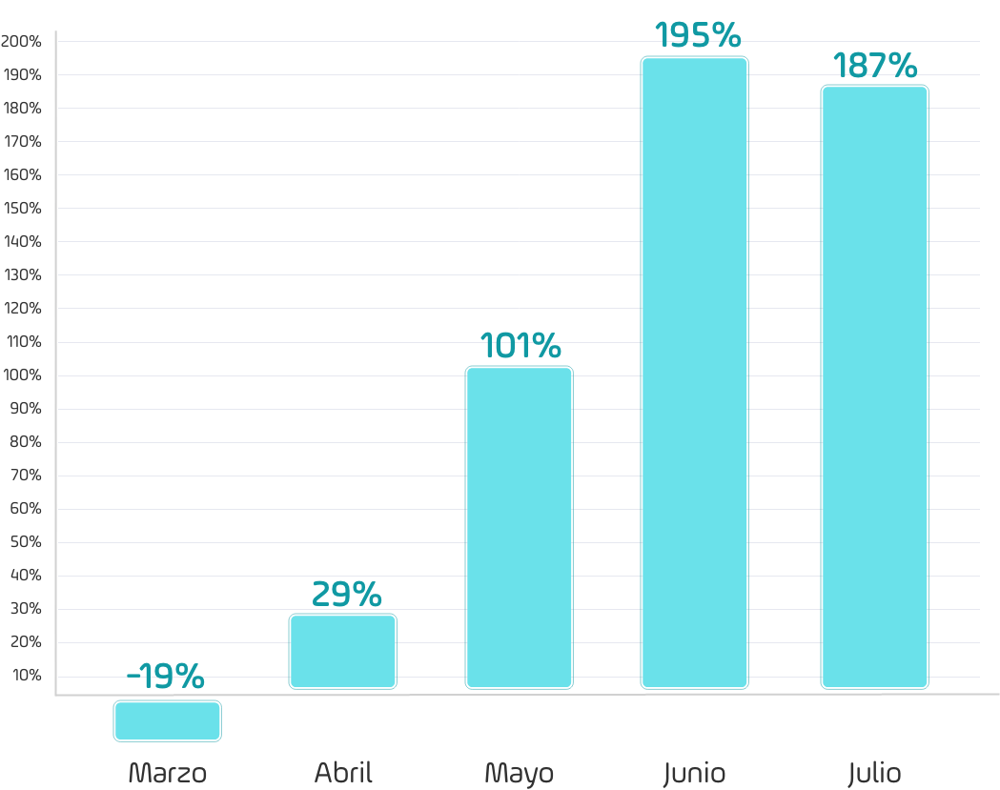
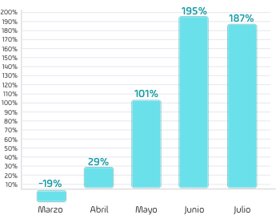
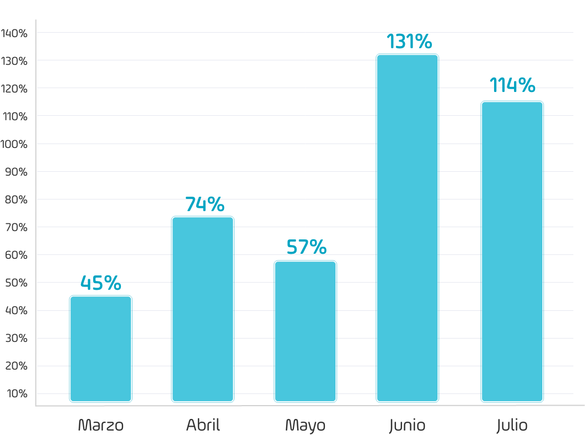
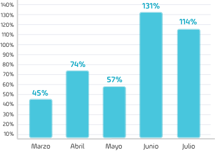

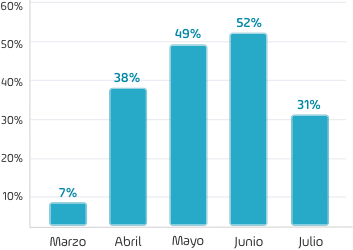
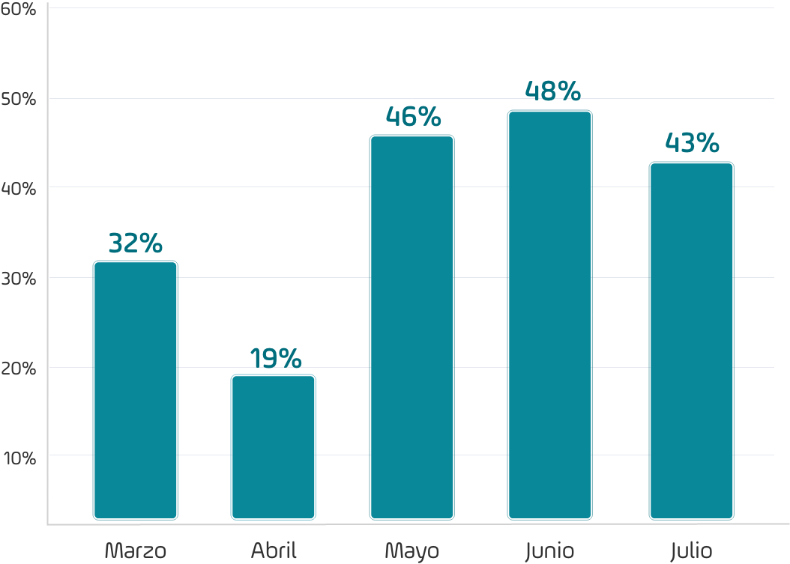
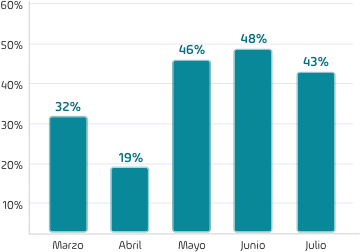
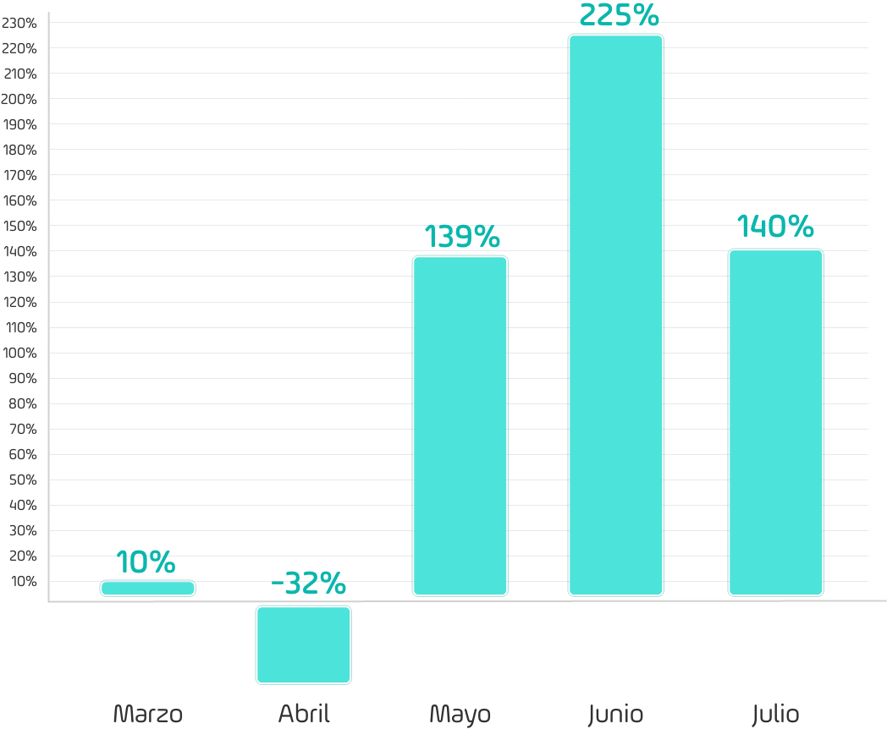
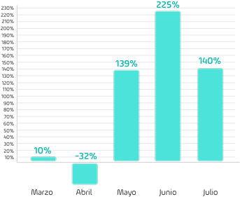
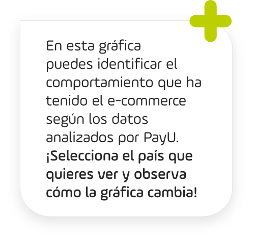
- Porcentaje de crecimiento Enero a Julio 2020 vs mismo periodo 2019